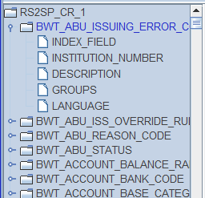
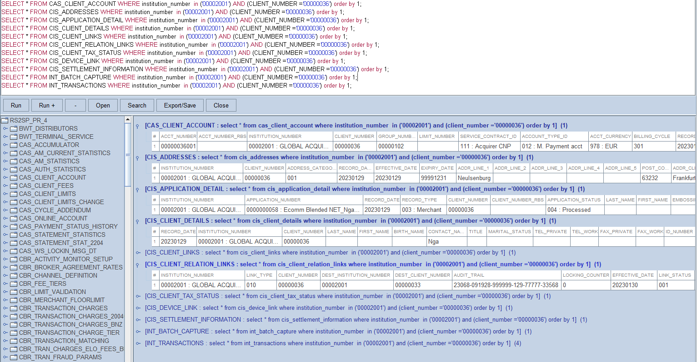
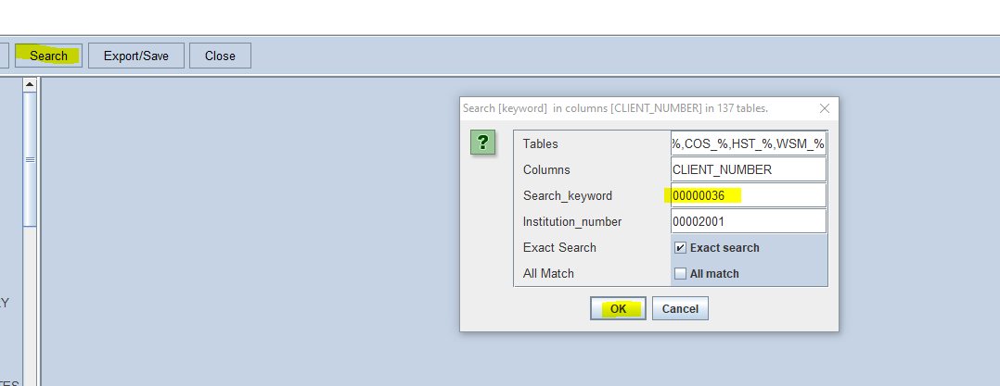
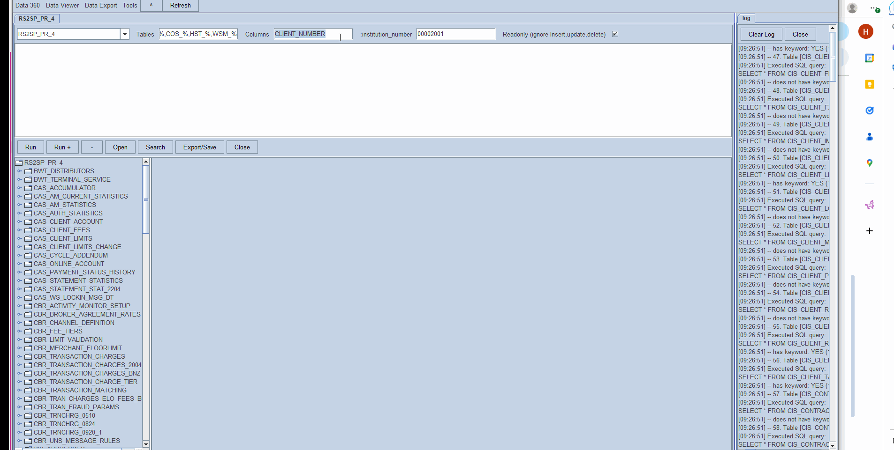
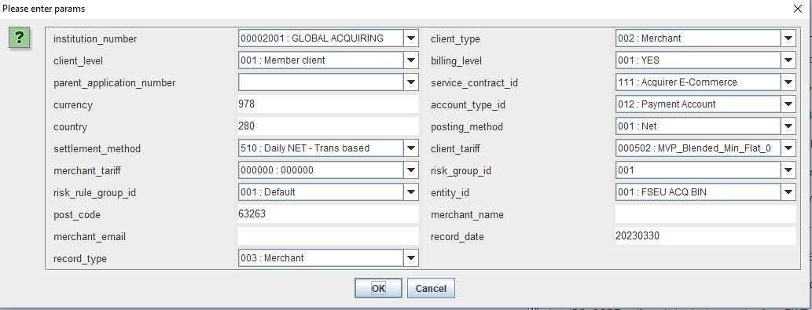
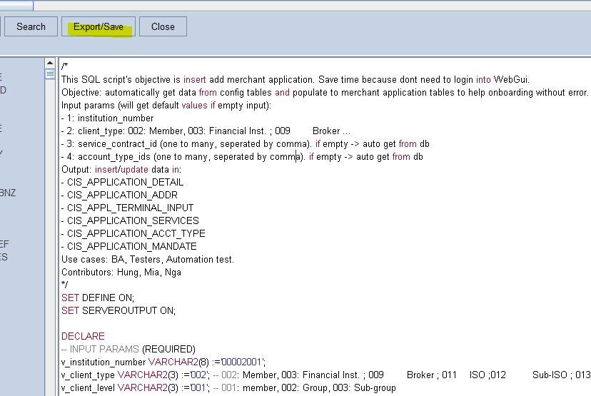
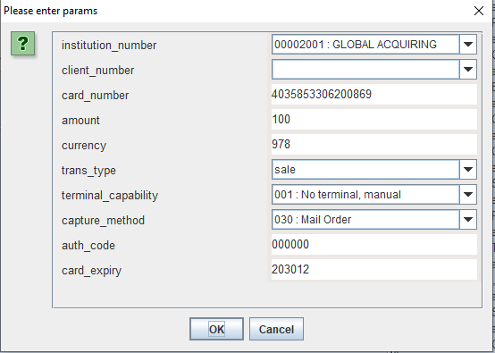
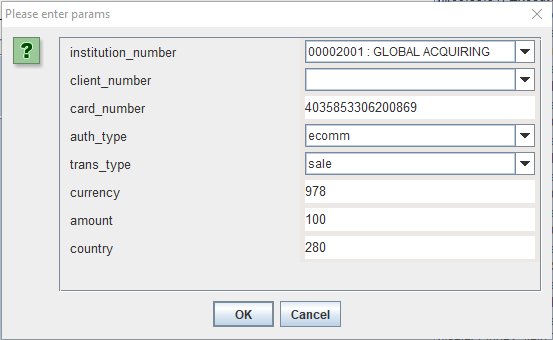

RS2 BA TOOLS guideline
Overview
This tool is designed for Business analysis to reduce some repetitive work and will increase productivity. Some useful features you can use with this tool:
- Search across the database for a given keyword in specific tables/ fields (optional).
- Filter tables that have fields.
- Lookup Index fields (CHT tables) and display value in query results automatically, no more writing join clauses.
- Generate scripts based on template files.
- Onboard merchant and broker, with dropdowns to select value for each field.
- Generate test transactions (acquire batch input, auths ..)
- Export data in sql or excel (for eg: institution setup or merchant data).
- Generate card numbers base on card product (visa/ mc/ diner) or country / currency etc
2. Setup
Step 1: Install Java SDK 11 in your machine:
https://docs.oracle.com/en/java/javase/11/install/installation-jdk-microsoft-windows-platforms.html#GUID-371F38CC-248F-49EC-BB9C-C37FC89E52A0
Step 2: Download rs2-ba-tools.zip file and unzip in folder C:\rs2-ba-tools at your machine: https://drive.google.com/drive/u/0/folders/1yEcGzSJWG0kjL1Ep3etOSUmrH6r12r8X
Step 3: Understanding folder structure:
- rs2-ba-tools.jar: main file
- initSettings.xml : configuration file
- excels: output excels
- sqls: sql files
- settings: database & lookup definition
Step 4: run rs2-ba-tools.jar
3. Data 360 tool
3.1. Select Data 360 from menu
3.2. Filter tables that have specific columns:
- Type tables in Tables textfield, then press Tab to see the result.
- Type columns in Columns textfield, then press Tab to see the result.
- Only tables that match filter conditions are displayed.

- You can right click on each table / column node and execute shortcuts related to that table / column.
3.3. Execute SQL scripts
- Enter one or many sql statements
- Select one sql statement (at current cursor) or select all statements (ctrl + A).
- Click Run to execute single statement or selected statements
- Click Run+ to execute all statements.
- The results will be displayed with lookup values for all index fields

- Click Export / Save to export results to Sqls or Excel file.
3.4. Search database for a Keyword
Sometimes you would like to search for a given column / keyword. It will help you to reverse-engineer and find a data flow of that given column/ keyword.
- Filter tables (optional)
- Filter columns (optional)
- Click on Search button, enter Keyword

- Tick / untick Search Exact to search by equals (=) / contains (%).
- Incase you have multiple keywords or columns, Tick / untick All Match to search by AND / OR operator
- Click Search. The result will be displayed like this. The result will display all lookup values for index fields.

3.4. Generate Merchant Onboarding (SOA process 467) script.
- Select from menu > Data 360 > application_input
- Provide information on popup screen:

- This generated script will display in the result panel, you can Save it into a file or copy into clipboard and run it in Benthic.

3.5. Generate Acquirer Batch Input (SOA process 086) script.
- Select from menu > Data 360 > acquirer batch input
- Provide information on popup screen:

3.6. Generate Authorisation script (SOA process 455) script.
- Select from menu > Data 360 > authorisation input
- Provide information on popup screen:

4. Data Viewer tool
4.1. Select